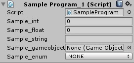
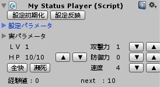
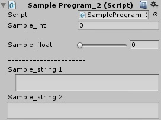
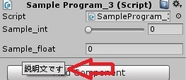
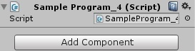
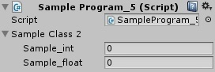
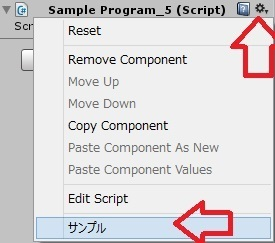

今回は、《 Inspector 》で表示される各項目の表示方法を変更してみたいと思います。
| 《 Inspector 》の表示について |
public型で宣言した変数は、《 Inspector 》に表示されます。
例えば、以下のプログラムを作成し、ゲーム上のオブジェクトに追加すると、《 Inspector 》では以下の様に表示されます。
using UnityEngine;
using System.Collections;
public class SampleProgram_1 : MonoBehaviour {
public int sample_int;
public float sample_float;
public string sample_string;
public GameObject sample_gameobject;
public enum SAMPLE_ENUM{
NONE , NUM,
}
public SAMPLE_ENUM sample_enum;
}

特に何も設定しなくとも、各変数の型に応じて《 Inspector 》上に入力フィールド／選択フィールドが形成されます。
今回は、この《 Inspector 》で表示される各項目の表示方法を変更してみたいと思います。
ちなみに色々と工夫すれば、以下の様な一風変わった《 自作Inspector 》表示も出来るようになります。

上記には、『ボタンを押すと指定した関数実行』『折り畳む事が出来る』『２列以上の変数表示が出来る』などなどが盛り込まれています。
| 属性(Attribute)を追加する |
《 Inspector 》表示は、簡単なものであれば標準で使用可能な属性(Attribute)を追加してやる事で出来ます。
属性(Attribute)は、クラスや変数を宣言する前に [ ] で囲んで記述したものです。
例えば、以下の様に書きます。
using UnityEngine;
using System.Collections;
public class SampleProgram_2 : MonoBehaviour {
[SerializeField] private int sample_int;
[Space(15)]
[Range(0.0f , 5.0f)] public float sample_float;
[Header("----------------------")]
[Multiline(2)] public string sample_string1;
[TextArea(2, 5)] public string sample_string2;
}

[ ] で囲んだ属性(Attribute)を付けた事で、《 Inspector 》の表示が変わりました。
ここで使用した属性(Attribute)は、具体的には以下の特性を持っています。
[SerializeField] ： private型でも表示させる
[Space(15)] ： 指定数値分、スペース(行間)を開ける
[Range(0.0f , 5.0f)] ： スライダーを表示。範囲は0～5
[Header("----------------------")] ： 指定した文字列を表示
[Multiline(2)] public string sample_string1; ： テキスト入力フィールド。カッコ内は表示する行数。右端の折り返しなし。
[TextArea(2, 5)] public string sample_string2; ：テキスト入力フィールド。カッコ内は表示する行数(最小値 , 最大値)。右端で折り返す
これまでは private型 は《 Inspector 》に表示される事はありませんでしたが、[SerializeField]という属性(Attribute)を記述する事で、《 Inspector 》に表示させる事が出来るようになります。
変数が多くなってくると、[Space(10)]を使って空行を作ってみたり、[Header("タイトル")]を使ってグループタイトルを記述するような事も出来ます。
《 Inspector 》上で弄りたい数値を範囲指定する[Range(0.0f , 5.0f)]を使う事で、最小値／最大値を明示しておく事も出来ます。あと数値を変更しやすくなります。
１行で収まらないテキストを表示させたいなら、[Multiline(2)]や[TextArea(2, 5)]を使って、最初から入力フィールドを拡張しておく事も出来ます。
このように、Unityで最初から用意されている属性(Attribute)を付ける事で、意図的に《 Inspector 》表示を変更する事が出来ます。
また、これらの属性(Attribute)は、[ ]内で , を使う事で、複数個指定する事が出来ます。
using UnityEngine;
using System.Collections;
public class SampleProgram_3 : MonoBehaviour {
[SerializeField , Range(0,5)] private int sample_int;
[Space(10) , Tooltip("説明文です")] public float sample_float;
}

１行目では、private型を表示させる[SerializeField]と、スライダー表示する[Range(0,5)]を組み合わせています。
２行目では、直前に空行を入れる[Space(10)]と、《 Inspector 》上でカーソルを変数にあわせると文章を表示させる[Tooltip("説明文です")]を組み合わせています。
属性(Attribute)は、直後にある変数に対して効果を及ぼすため、[ , ]内でまとめる事も出来ますし、[Space(10)][Tooltip("説明文です")]と書いても問題ありません。
余談ですが、[Tootip()]で改行等したい場合には[Tooltip("説明文です\n見てね")]のように \n などの文字コードが普通に使えます。
private型を《 Inspector 》に表示させる方法があるならば、逆にpublic型を表示させない方法もあります。
using UnityEngine;
using System.Collections;
public class SampleProgram_4 : MonoBehaviour {
[HideInInspector] public int sample_int;
[System.NonSerialized] public float sample_float;
}

上記は、どちらも
このように、public型を《 Inspector 》に表示させない属性(Attribute)です。
２つの違いですが、[HideInInspector]の場合は、この属性を付ける前に《 Inspector 》上で値を変更していると、その値は保持されます。
逆に[System.NonSerialized]の場合は、この属性を付ける前に《 Inspector 》上で値を変更していても、なかった事にされて初期値に戻ります。
public型の変数でも『弄る必要が無い』『弄らせたくない』『表示しても仕方がない』変数の場合に使用するといいでしょう。
また、使う場合には後者を使用した方が問題が無くて良いかと思います。
クラスの変数を表示させる事も出来ます。
using UnityEngine;
using System.Collections;
public class SampleProgram_5 : MonoBehaviour {
public SampleClass1 sampleClass1;
public SampleClass2 sampleClass2;
[SerializeField]public SampleClass1 sampleClass3;
[System.NonSerialized]public SampleClass2 sampleClass4;
}
public class SampleClass1{
public int sample_int;
public float sample_float;
}
[System.Serializable]
public class SampleClass2{
public int sample_int;
public float sample_float;
}

SampleClass1クラスは、何もつけずにクラスを作成しています。
SampleClass2クラスは、[System.Serializable]を付けたうえでクラスを作成しています。
そのままの状態で、 SampleProgram_5クラス(コンポーネント)の１行目と２行目で両クラスを宣言した結果、SampleClass2クラスだけが《 Inspector 》上で表示されています。
SampleClass1クラスはこれまで通り、public型でも《 Inspector 》上には表示されます。
ならばSampleClass1クラスの前にprivate型変数を表示させた時と同様に[SerializeField]を付けてみますが、それでもやはり《 Inspector 》上には表記されません。
つまり、クラス作成時に許可が出ていないと、宣言時に[SerializeField]を付けて表示する様に仕向けても意味がないという事です。
逆に、SampleClass2クラスの前に[System.NonSerialized]を追加して非表示にする事は出来ます。
自作クラスを変数をして使いたい場合には、このような手法を使う事で《 Inspector 》上に各変数を表示させることも出来るようになります。
| その他、色々な属性(Attribute) |
属性(Attribute)については、公式マニュアルを見るなり、説明をしている他のサイト例えばこことかで説明されています。
それほど多いわけではありませんが、それらの中で役立つかな？というものを幾つかピックアップして此処でも紹介しておきます。
using UnityEngine;
using System.Collections;
[SelectionBase]
public class SampleProgram_6 : MonoBehaviour {
本文...
}
クラス(コンポーネント)の前に[SelectionBase]を付けておくと、そのクラス(コンポーネント)を所持しているオブジェクトをUnity上でクリックした際、例え子オブジェクトを選択した事となっても《 Hierarchy 》で親オブジェクトを選択します。
シーン上にオブジェクトが増えてくると、子オブジェクトにして整理する様になると思いますが、その時に画面上をクリックすると、《 Hierarchy 》上のオブジェクトツリーが展開されてイラッとくる事が多くなります。
それが嫌な方は、クラス(コンポーネント)の前に[SelectionBase]を付けておくと、むやみやたらとツリー展開しなくなります。
Unity上でプログラム内の関数を任意のタイミングで実行したい場合には、以下の方法があります。
using UnityEngine;
using System.Collections;
public class SampleProgram_5 : MonoBehaviour {
[ContextMenu("サンプル")]
public void sample_Mesod(){
}
}

関数の前に[ContextMenu("表示する名前")]を書いておくと、《 Inspector 》上で右上のメニュー(歯車)を選択した時に出るメニューに、その関数を実行するための項目が追加されます。
冒頭で紹介した『ボタン表示』ではありませんが、似たような機能はこの属性(Attribute)を使う事で可能です。
余談ですが、[ContextMenu("サンプル/１番")]のようにバックスラッシュを使って階層化する事が出来る……様に思えますが、こちらは実装されていません。
メニュー表記は「サンプル」が表示され、横に
以上の様に、Unityで標準搭載されている属性(Attribute)は数は少ないですが、使用方法も簡単なので、《 inspector 》表記をちょっと変える程度には役立ちます。
また、今回は説明致しませんが、『ボタンを押すと指定した関数実行』『折り畳む事が出来る』『２列以上の変数表示が出来る』などなど、『カスタム属性の作成』『表記方法のカスタム化』も出来ます。
こちらはプログラムする必要があるため、少し難度が高くなります。
次回はそちらに関しても少しだけご紹介致したいと思います。
今回の説明に関しては以上です。
前回 ： FPS作成--(26)仕上げ
次回 ： Unity/C# - Inspector表示の変更②
Unity初心者の為の記事一覧へ
Unityで製作したゲーム一覧へ
ブログTOPへ